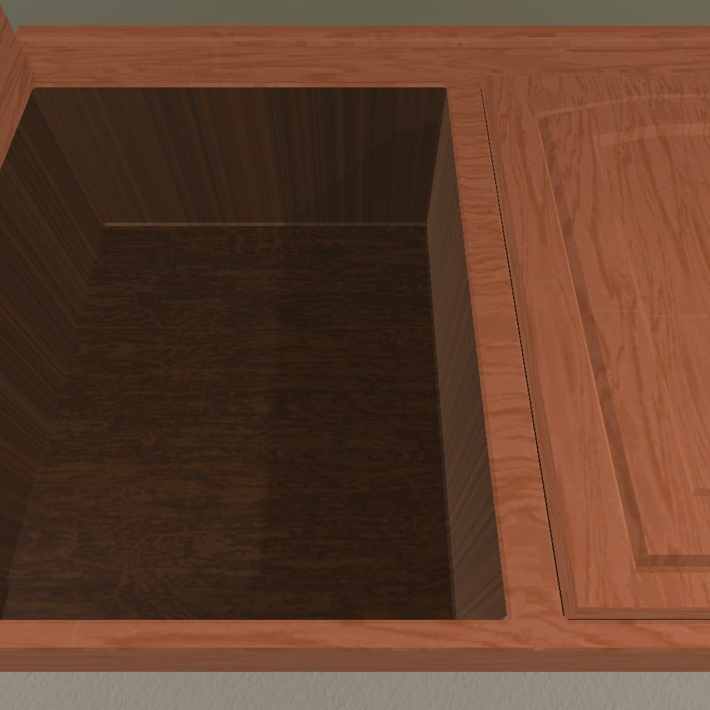

---------------------------------------------------------task: 15---------------------------------------------------------
--------------------------------------------------------------------------------------------------------------------------------------------------------------------
--------------------------------------------------------------------------------------------------------------------------------------------------------------------
Step:--------------------------------------------------------------------------13-------------------------------------------------------------------------------
----------------------------------------
VLM Prompt:
Image1:
**Instruction**
1. Analyze the provided image to identify all visible household objects, focusing on those relevant to the task description "put a cool mug in coffeemachine."
2. Use the analysis of the image and the task hint "The agent must find an object of the desired type, pick it up, go to a fridge, cool the object with the fridge, then find the correct location to place it, and put it down there. The agent does not need to use the fridge button or open the fridge to cool the object, and the agent just needs to do action that is "cool the object with the fridge"." to answer the question: what is the most reasonable action in the choices for the task description "put a cool mug in coffeemachine"?
4. Decide and write the answer using the template: The answer is: (i): , where i is the real number. If there is no desired object in the image, search every place based on **Initial Observation** to find the object. And if no one is exactly correct, choose a similar answer.
**Initial Observation**
You are in the middle of a room. Looking quickly around you, you can see cabinet (1-15), fridge (1), countertop (1-4), drawer (1-4), microwave (1), toaster (1), coffeemachine (1), garbagecan (1), sink (1), stoveburner (1-3), sinkbasin (1)
**Answer Choices**
(1): go to cabinet 3
(2): go to fridge 1
(3): go to countertop 1
(4): go to cabinet 4
(5): go to cabinet 5
(6): go to cabinet 6
(7): go to cabinet 7
(8): go to drawer 1
(9): go to drawer 2
(10): go to cabinet 8
(11): go to drawer 3
(12): go to cabinet 9
(13): go to cabinet 10
(14): go to drawer 4
(15): go to microwave 1
(16): go to cabinet 11
(17): go to toaster 1
(18): go to cabinet 12
(19): go to cabinet 13
(20): go to cabinet 14
(21): go to cabinet 15
(22): go to countertop 2
(23): go to coffeemachine 1
(24): go to garbagecan 1
(25): go to countertop 3
(26): go to countertop 4
(27): go to sink 1
(28): go to stoveburner 1
(29): go to stoveburner 2
(30): go to stoveburner 3
(31): go to sinkbasin 1
(32): open cabinet 2
(33): close cabinet 2
(34): take nothing from cabinet 2
**Answer**
Let's think step by step by following the instructions.
----------------------------------------
----------------------------------------
Original Response:
First, we need to find a mug. Typically, mugs are stored in cabinets or on countertops. Since the image provided shows an open cabinet (likely cabinet 2) and no mug is visible, we can rule out this location. Therefore, we should search other cabinets or countertops where mugs are commonly kept.
Next, once we have the mug, we need to cool it with the fridge as per the task hint. We don't need to interact with the fridge's functionality; we just need to perform an action near it.
Finally, we must place the cool mug in the coffeemachine. We know where the coffeemachine is located based on the initial observation.
Considering all these points and the fact that the open cabinet in the image does not contain a mug, the most reasonable next action would be to search another cabinet for a mug. Since we don't have any information about which cabinet might contain a mug, we can choose one that is typically used for storing such items. Cabinet 5 is a reasonable choice as it is neither too high nor too low, making it a common storage place for frequently used items like mugs.
The answer is: (5): go to cabinet 5.
----------------------------------------
----------------------------------------
>>> Refine Original VLM Response and Get Pure Action: go to cabinet 5
----------------------------------------
-----------------------------------------------------------------
Running time: 11.666497945785522 seconds
Total Money: 4.932249999999998
-----------------------------------------------------------------
-----------------------------------------------------------------
Text Observation:You arrive at loc 6. The cabinet 5 is closed.
-----------------------------------------------------------------
UNSUCCEED